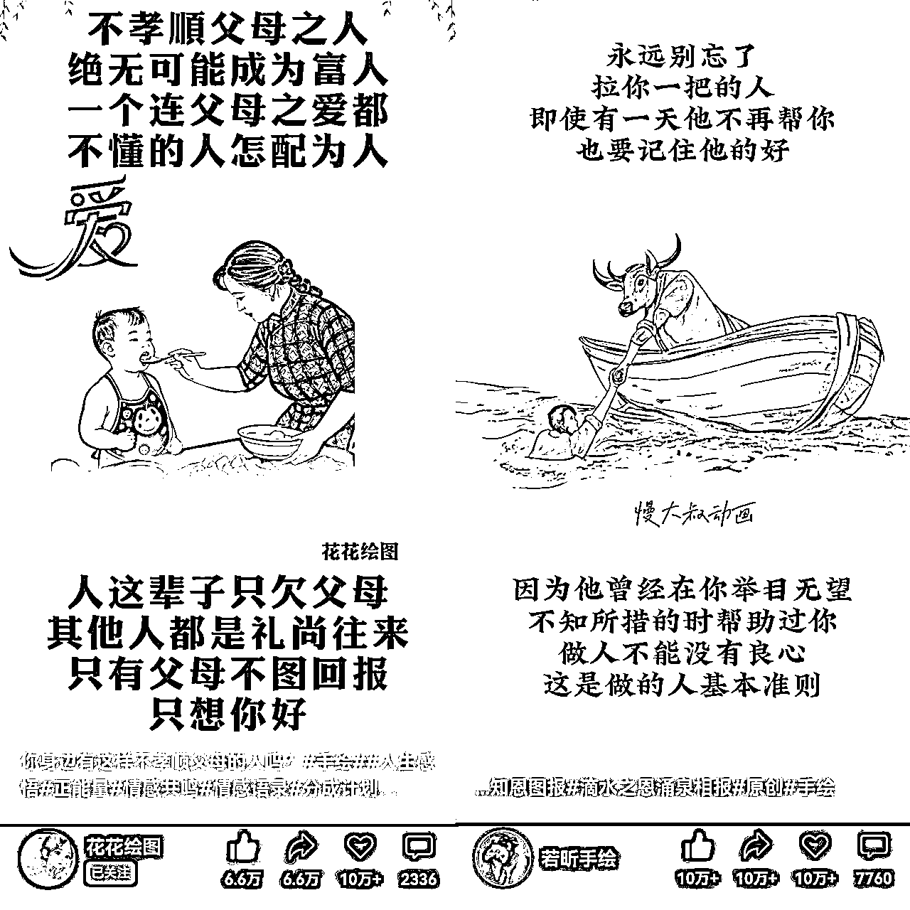
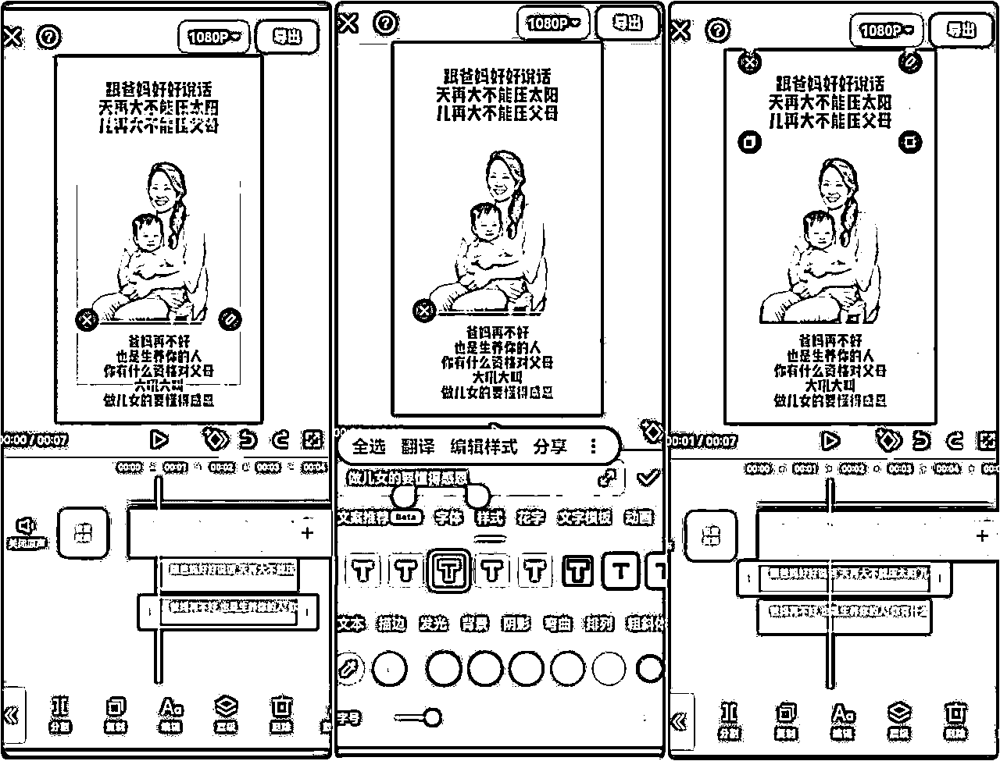

来源：https://o0yvn3o31a.feishu.cn/docx/JXjRdmkdvouUuwxrFp2cY5Pfnob
最近在操作的一个视频号手绘情感语录赛道，涨粉效果非常不错，操作玩法也很简单，所以我整理了复盘分享给圈友们，我相信很多人刷视频号的时候也见过这样的短视频，这个跟送祝福赛道差不多，都是针对中老年用户群体的短视频。变现可以做创作者计划，也可以做快速涨粉用于带货等，说真的这个涨粉是真的很猛！
操作上很简单粗暴，基本上就是通过AI图片以及剪映制作视频就可以了，这里说的AI图片是通过AI生成类似于手绘的图片，我们不需要自己去手绘，直接AI就可以生成的，说白了就是看着像手绘，实际上不是真的手绘，也算是一个手绘的信息差吧，我是这么认为的。
来，我们先看一下短视频的展现案例：
视频的展现也很简单：上面是和父母相关的文案，下面也是一整段文案，然后搭配一个AI生成的手绘图片就可以了。
说真的，视频号中老年群体比较多，做这种中老年情感类型的，孩子方面的情感语录是很好热门的。因为中老年比较吃这类型的内容，比如之前很火的祝福类视频，很容易产生共鸣，看的人群都是中老年人，年轻人基本上很少看这个，基本是30、35、40岁以上的人喜欢看类似于这种感情，怀旧的视频内容。
下面是我们做了其中一个账号数据：
如图所示：11月30号11点多发的视频，四点多发的视频，晚上九点多又发了一个视频，包括后面发的视频播放数据还是非常不错的。
下图是我们其中一个账号，可以给大家看看数据：
也就可以看看同行对标做的账号数据：
这个可以多去搜搜同行，视频号可以看到很多，也方便我们后期抄袭对标的文案！
我们简单说下这次复盘的内容有哪些，主要分为账号注册、开创作者计划、简单养号、文案撰写、视频制作以及视频发布。整体操作很简单，一看就懂！
这个账号注册很简单，基本上圈友都会，那么我这里简单的说下流程！
微信号：有微信的直接用就行了，基本上大家都有微信
没多余微信，可以用手机号注册新号，去营业厅办理实名卡，然后注册微信，一个实名可以注册15张卡，移动电信联通各五个也可以自己去网上营业厅办理，流量套餐可以30-50G，也可以用视频号流量卡注册。
注册环境：必须是一机一卡一号
可以多开注册微信，但不建议多开，容易封号，但很多设备能多开且不封号，根据个人情况，如果你经常多开，没啥问题就可以继续多开，不要机卡分离，可以用无线网。
注册流程：下载微信应用程序、打开微信点击注册、填写手机号和昵称、密码，并同意注册、然后注册完成，资料设置包括头像、昵称、签名、微信号，资料随便设置就行。
微信养号：设置好之后，可以跟自己的小号对话交流
每天交流下，然后去发万能朋友圈，可以关注下腾讯新闻，平时刷一下，充几块钱腾讯基金和腾讯公益，钱包里放几块钱
视频号：开通视频号
看下截图，左图是默认没有开通，点击发表视频就到右边的界面，填好资料，比如某某手绘，下面随便填，创建之后到发布视频的界面，然后开通视频号备用就可以了，创建之后到发布视频界面，开通视频号之后，备用就行了。
这里要注意：什么时候用什么时候开通视频号就行了！
如果你想做创作者计划，把这个开通就行了，如果不想做就正常涨粉就行了，下面呢我也简单跟大家说下开通流程，很简单没难度的！
门槛要求：需要满足三个条件，开通创作者分成计划，有效关注100人以上，符合内容规范，以及发表公开视频大于等于10条，这几个都符合，3到5天或者当天就能开通收益，根据提示开通就行了。
开通条件：官方要求10个原创，粉丝100+，内容规范化，全部都符合，会3-5天之内收到开通收益的提醒，然后在根据提醒去开通，打开创作者中心，创作者分成计划，申请加入。
开通方法看下：
第一步、先发10个真人出镜的情感语录视频，分2-3天发完，上午发一个，中午发一个，晚上发一个，三天把剩下的给发完，或者第一天分不同时间段发五个，第二天分不同时间段发五个，分两天发完也行。
先发十个真人，可以把文案放慢一点读出来，用前置摄像头拍人脸和上半身，十个分两天或三天发完，文案抄对标，真人去拍可以用美颜相机提词器，会提示免费试用七天，七天之后把免费试用停掉就可以了，这是目前最稳定、最快速过的方法，符合内容规范化的标准视频。
第二步、制作绘画视频发布视频号，正常进行涨粉，到100会满足要求。
第三步、10个真人发完，然后发绘画涨粉到100粉丝，会符合规范化，然后邀请开通计划
注意：计划过了之后，真人出镜的可以留着，以后账号起来了，在隐藏
有点要说明：后期随时可能会提示视频不规范，到时候可能还得去做真人出镜，一样的模式哈！
这个创作者根据你的需求，看你是想做收益呢还是想做涨粉，然后去操作！
我们基本上用的是新号，也就是视频号开通之后直接发，新号有流量扶持，虽然不要求重点去养号，但是需要每天去搜手绘视频，刷一刷账号活跃度，等于刷活跃度了。
可以积累很多爆款的视频素材，到时候我们也好用，去刷视频找对标，找对标爆款的，点赞至少1000或者500以上的。
四、文案撰写
文案这块很简单，没有太多难点，基本上就是找符合指标的去抄袭就行，或者AI生成也可以，下面我简单说下哈！
文案指标：多搜集对标，找对标作品点赞1000以上，或者搜手绘、情感、人生感悟，爆款视频里的文案，也可以去别的平台，找近期情感类爆款视频文案，手绘不光是父母、儿童，还有励志类的，目前老人、父母爆的最厉害。
对标案例：比如图上的你身边有不孝顺父母的人吗，文案最容易产生共鸣，标签有手绘、人生感悟、正能量、情感共鸣、情感语录这一类的，描述基本上照抄，6.6万属于爆款文案，你在去做有很大几率会爆，就是二爆定律。
添加描述：直接照抄同行的文案，视频里面的文案也照抄同行的，可以自己稍微修改一下，也可用AI生成文案，自己去测试一下。

视频制作这块也很简单哈，下面我会详细的说明，一般看完就可以操作！
先看下制作视频的要点：
1、时长控制在7-10s左右
2、音量可以调大，调到最大也行
3、视频中加上声明:视频无不良引导请理性观看和树立正确价值观，分成两个来写，不透明度10-15之间
4、字体尽量在安全区内，不要超过视频区域
5、视频做好，可以分发到五大平台，视频号，抖音，快手，小红书，今日头条
本次视频分为两种制作方法，我们逐一的说下：
第一种、静态视频操作流程
d
背景素材：
打开小红书，搜索关键词，比如想用比较简单的背景，用绿色的，就去找素雅的，找你喜欢的拿过来用，或者搜索中国风清雅背景图，点击右上角箭头，复制链接，打开微信搜索小程序皮皮去水印，点击去水印，把链接粘贴进去，点击去水印，找到需要用到的这张图片下载就可以。
背景音乐：找对标同行的，可以点击背景音乐，点击参与，不想参与的可以把视频录下来，然后去剪映里把音频提取出来。
AI生成图片：
绘画有两个软件，智谱清言、豆包，直接在应用商城里面下载就可以。
智谱清言：点开智谱清言，点击页画图，在输入这个关键词的时候在前面加上什么人，亚洲人、中国人，中国老奶奶，或者中国现代女人，做着一个什么样的事情，比如坐在凳子上，怀里抱着孩子，脸上洋溢着灿烂的笑容或者微笑都行，再给它结尾再加一个素描，如果想做黑白的就写素描手绘黑白，不想图片是黑白的，就不加黑白，比例可以调成1比1或者4比3都可以，根据自己的需求去选。
选一比一，先发送一下，还有很多咒语，比如自然光、立体光，光线都可以放上去，远景，构图，超高清，发上去看生成的效果，如果对生成的图片不满意，可以重新生成，想让它变成彩色的，可以直接把咒语复制一下，素描手绘改成彩色图片，想要黑白就加上黑白，想要彩色就加上彩色就可以，这场景选择根据自己的需求去选就可以，直接下载保存。
给大家看一下我制作过的历史记录，还是很好看的！
豆包：关键词大家可以自己去参考使用一下，比如中国现代妈妈，坐在凳子上，脚放在盆里，一个男孩蹲着给妈妈洗脚的手绘彩色图，或者是素描手绘黑白图，图片整体效果很不错。
视频制作流程：
剪辑：打开剪辑，点击开始创作，把需要用到的背景图片放进来，点击高清添加，画中画，新增画中画，找到这张图片，高清添加，把背景比例调成9比16，再把整体比例调成9比16。
然后去抠图，把图片拉到和背景图片对齐，选中AI图片，往右滑点击抠像，自定义抠像，选中，点击勾号，勾完之后往中间放一下。
输入文字，参考同行的文案，点击文本、新建文本，输入文字，拉到上面，编辑调整一下样式和大小，选择新青年样式，调成黑色，如果不想描边的，就把描边关掉，变成纯黑色放到中间位置。
然后复制一层给拖到下面，再输入下面的文案，缩小放到合适的中间位置，然后可以把中间的这几个字调整一个颜色，把文字拉倒和图片对齐。

接下来去添加音频，音频在视频号里面录的，仅导入视频的声音，把后面多余的裁剪掉，拉倒开头，打到开头，拉所有的长度都要和音频对齐，再添加一个贴纸，比如搜索树枝，找免费的用，然后旋转一下放到右上角去，再复制一个出来放到左边，调整一下镜像对齐。
再添加关键帧，让图片动起来，点击选中图片，在开头添加关键帧，让图片从左边往右边移动起来，在4秒左右再给打一个关键帧，让图片往右边移，在最后打关键帧，让它回到中间位置。
接下来再添加水印文本，比如输入黄岛主，颜色调成白色，如果想横排的话就这样放，如果竖排的话就空格，缩小一下放到合适的位置，让文字也动起来，可以在开头打上关键帧，再拉长下面的位置，在最后再打个关键帧，让它往下滑，做好之后右上角1080P帧率，60码率导出。
第二种、动态视频操作流程
其实也很简单，就是让图片动起来，需要用到一款软件叫即梦AI，跟其他的操作是一样的，这个软件也可以生成AI图片，大家也可以自己去尝试操作一下，跟豆包的关键词输入是差不多的，问你需要用这个软件生成视频，点击左下角想象，生成需要用到点数，点数每天都会送，积分点数正常是够用的。
在输入框里面点击右边有个图片，打开需要让它动的图片，点击勾号，在对话框左边紫色箭头这里，点击视频生成提示词，这些都不需要输入，直接点击右边5积分，消耗5积分，操作完之后点开图片下载下来，保存到本地。
保存完之后打开剪映去剪辑，动态视频制作和静态图片其实制作是一样的，点开之前的模板，只需要把图片换成动态视频，拉到开头，然后去抠图就可以了，扣完之后，后边多余的音频没有画面，把视频复制粘贴一层出来，把后面多余的分割删掉，因为本身是视频，所以就不需要打关键帧让它动了，要调到中间位置，其他的就不需要去改了，然后导出就可以了。
制作方法很简单，这里我就讲到这里，圈友可以直接操作！不懂的地方再问我就行啦！
发布很简单，下面我说下：
一天至少四条作品，分别上午7点到9点，中午11点到1点，下午5点到8点，时间也不能太早，也不能太晚，发布不要太密集，基本上2个小时发一条，如果上午发有爆款了，可以时间间隔长一点去发。
当天如果有视频大热门的话，可以等视频热门差不多了，不涨量了，再发下一个视频，原创分类是情感，刚开始没过计划之前是没有的，就直接发，过计划之后，选择情感分类，或者直接发也行，自动会分到那个类目。
背景音乐找爆款的就行，话题对标同行的，位置不填写，点原创，不点分类，发布就可以了，不点原创没有收益，如果多个视频一直没有爆就放着，因为我们抄的是爆款，爆款我们再去发有更大的几率爆。
基本上就是这样的，很多做视频号的圈友应该都懂这些啦，就不多说了！
差不多这些吧，按照我写的这个SOP可以完美的去操作这个玩法，如果你感兴趣可以看完就去实操，做出效果也可以找我反馈的，好了，有问题可以一起交流哈！
注意：未经授权，禁止转载到各大平台，需要授权，找黄岛主即可！